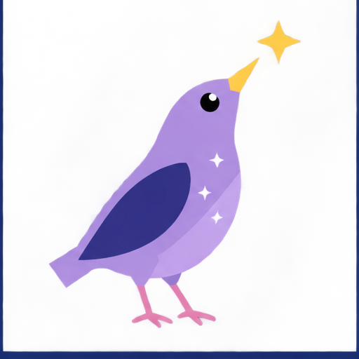

Your starling, traced as SVG
Left is the AI picture you chose. Right is the new SVG. The shapes, colors and positions are traced from the picture's pixels. The eye, the stars and the beak are redrawn as exact circles, symmetric stars and straight lines, measured from the picture, so they stay crisp at any size.
Side by side

A first look on the site
Just a preview of the traced bird as it is today. Nothing on the site has changed yet.